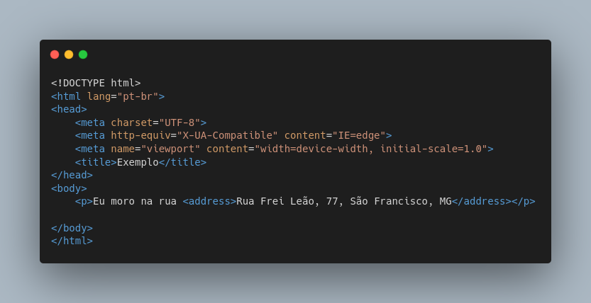

Semântica é o significado de alguma coisa, é o que determinada coisa tem como significado. Semântica é diferente de forma.
O HTML5 possui muito mais semântica do que o HTML4, que possuia muita forma também.
Hoje, temos o CSS para dar forma a nossos documentos HTML, não precisando misturar semânticas e formas com códigos HTML como era possível no HTML4.
HTML5 não se foca mais em forma, mas sim em semântica, significado!
No HTML4 havia uma tag de sublinhado, que era a tag <u>. Percebe-se que ela não tem um significado específico, ela não demonstra esse significado para quem a escreve. Por isso ela é uma tag de forma, usada no HTML4.
Abaixo, veremos um print do seu uso:

Código:

Nota-se que a estrutura de códigos do HTML4 é diferente da estrutura - inicial - de código do HTML5.
No HTML5 temos como exemplo de tag semântica a tag <adress> que é uma tag onde se destaca o texto e se clicar em cima da mesma, pode levar o usuário até a página do Maps. Nota-se que ela é uma tag semântica pois possui um significado expresso do seu uso.
Abaixo, veremos um print do seu uso:

Código:
Observação: Depende do navegador para que ele consiga abrir no google maps.